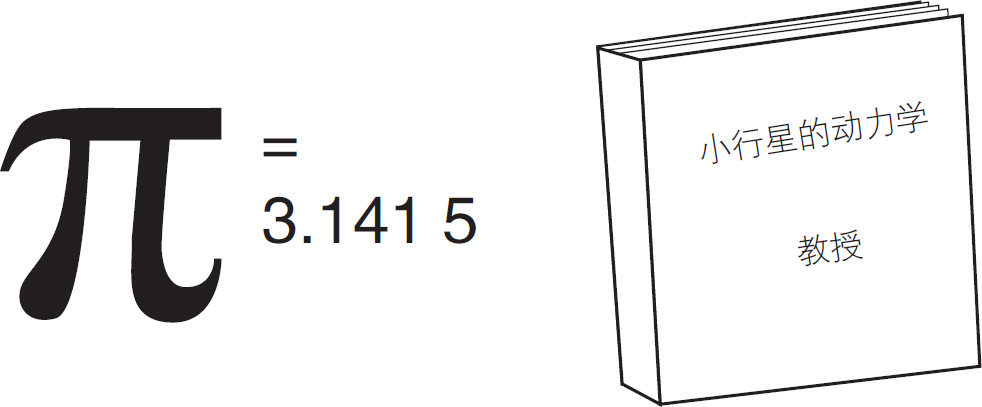
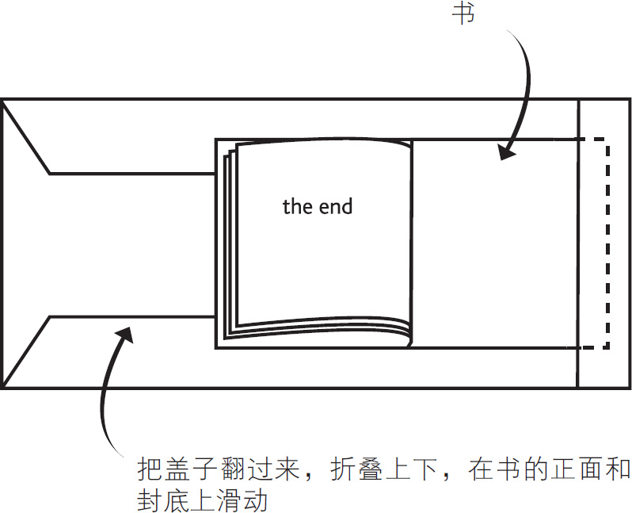
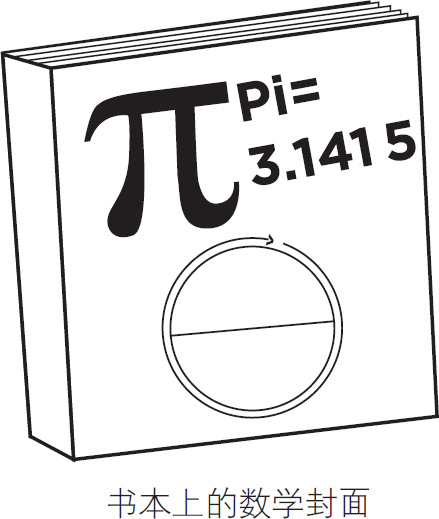
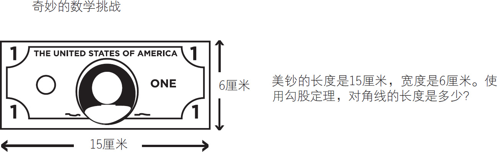
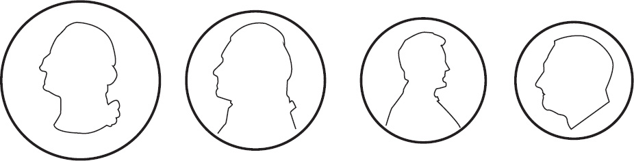
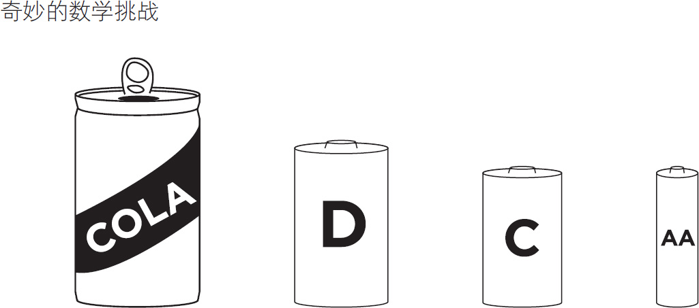

制作一些数学书籍封面，这样你就可以每天温习这些知识了。在这本书的词汇表那一页上画出图像和公式，如图5-63所示。

图5-63
然后折叠顶部和底部部分，在书的正面和封底上滑动，见图5-64。

图5-64
随着时间的推移，当你翻开你的教科书的时候，你会回想起这些数学原理，见图5-65。

图5-65
用测高计测量自己和别人的身高。比赛谁能准确地使用勾股定理和周长公式计算货币的尺寸，如图5-66和图5-67所示。

图5-66

图5-67
测量以上的硬币的直径，计算它们的周长
提示：C ＝πD
周长＝π×直径
然后计算苏打罐和电池这样的普通物体的周长，如图5-68所示。

图5-68
测量易拉罐和电池的直径，计算它们的周长
提示：C ＝πD
周长＝π×直径
不要满足于此，考虑使用更多的方法使数学和物理原理变得可视化。制作玩具、无线电控制车辆、类似乐高的工艺包，以及派对和棋盘游戏，将这些融入数学活动中！